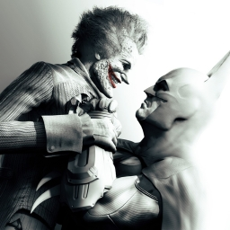
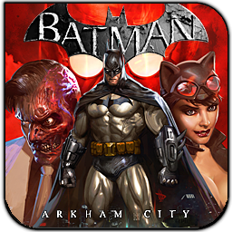

5 out of 5 Batman has been one of the greatest super heroes for years. I have been reading batman comics, watching batman tv shows and even playing older batman games. You always wonder how it feels to be the bat, well until Batman:Arkham Asylum was released. That game gave players the opportunity to run around arkham asylum with access to all his gadgets and beat baddies. Well in this game you are doing the same thing but the game is three times bigger than the original plus you can glide from building to building and you grappling hooks. One of the greatest things about this game is the fact that they use so many well known villians and bring in batman's side kick, the boy wonder, Robin. This game is great for anyone is has an amazing story and great fighting mechanics. Buying this game will be the greatest thing you do all year.
Developer: Rocksteady
Number of Players: 1
Consoles Available: Xbox 360, Playstation 3 and PC
Home | Wikipedia | Amazon | Reviews | Contact Us
Copyright © 2012, Kenneth Perry